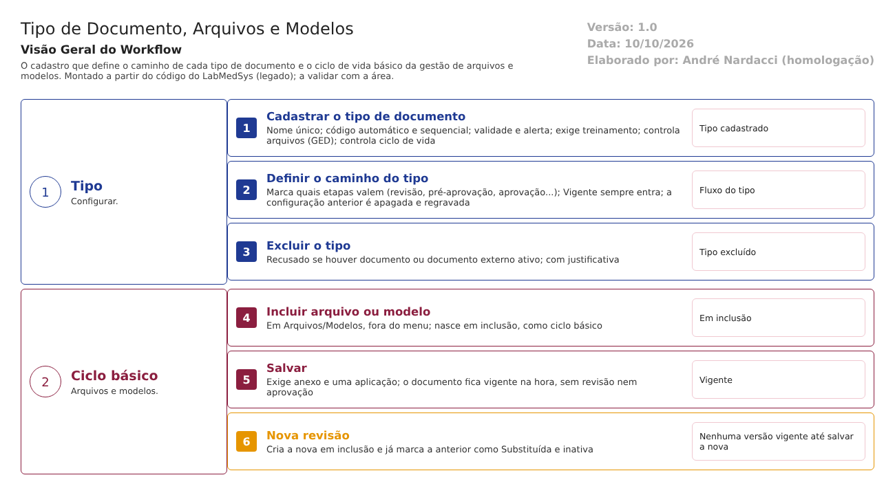

Objetivo
Este documento descreve dois pontos do Controle de Documentos que definem como os outros fluxos se comportam: - o cadastro de Tipo de Documento, que configura, para cada tipo, a codificação, a validade, o treinamento e o caminho de aprovação; - a gestão de arquivos e modelos, com um ciclo de vida básico que leva o documento a vigente sem passar pelo ciclo de aprovação.
É a base da regra de que documentos sejam definidos, aprovados e mantidos atualizados (RDC 658/2022, arts. 114, 117, 119 e 121).
Foi montado a partir do código do sistema legado. O que depende da prática da área está marcado como a validar. Os casos de teste estão no fim.
Escopo
- Tipo de Documento (Tabelas de Apoio): cadastro, caminho de aprovação por tipo e exclusão.
- Cadastro de Arquivos, Arquivos e Modelos: o ciclo de vida básico. Essas telas têm lógica completa, mas não aparecem no roteiro de menu do fornecedor (
00-reconhecimento.md, seção 2).
Nomes das telas: como aparecem no menu ou no alto de cada tela. Os caminhos de código ficam só nas regras e são relativos a 6.controle_documento/app/. Para encurtar: Tipo = HSolutions.ControleDoc.UI/Areas/TabelasApoio/Controllers/TipoDocumentoController.cs, Ged = HSolutions.ControleDoc.UI/Areas/Documento/Controllers/DocGestaoController.cs.
Visão geral do processo

Tipo de documento. O cadastro define, para cada tipo: - se o código é automático (com sequencial); - a validade e o alerta; - se exige treinamento; - se controla os arquivos (GED) e o ciclo de vida; - o caminho: quais etapas (revisão, pré-aprovação, aprovação…) o documento percorre até ficar vigente.
Ciclo de vida básico. Em Arquivos e Modelos, o documento é incluído e, ao ser salvo com anexo e aplicação, fica vigente na hora. A nova revisão marca a anterior como Substituída no momento em que é criada.
Descrição funcional das etapas
Tipo de documento
Regras de negócio
- RN001 – O nome do tipo não pode se repetir ("O campo TIPO DOCUMENTO digitado já esta cadastrado!") (
Tipo:221, 236). - RN002 – O tipo guarda:
- codificação automática com sequencial (
Tipo:409); - validade e alerta;
- exigência de treinamento;
- controle de arquivos e de ciclo de vida (
HSolutions.ControleDoc.Domain/Entities/TipoDocumento.cs:8-24). O alerta e o treinamento são cadastrados, mas não produzem efeito (fluxo 1, RN015; conformidade, tema 4). - RN003 – Caminho de aprovação por tipo: a tela lista as etapas em ordem, e o usuário marca as que valem. A etapa Vigente sempre entra (
Tipo:620-660). Ao salvar, a configuração anterior é apagada e regravada (Tipo:666-680). - Nada impede um caminho sem nenhuma aprovação.
- Inferência, a confirmar no teste: a troca do caminho não fica no histórico de alterações do tipo, porque os registros são recriados.
- RN004 – A exclusão do tipo é recusada quando há documento ou documento externo ativo daquele tipo, e pede justificativa (
Tipo:313-342).
Telas do sistema
| Módulo | Tela | Finalidade |
|---|---|---|
| Controle de Documentos | Tipo de Documento | Cadastrar tipos, o caminho de aprovação e os anexos do tipo |
Ciclo de vida básico (arquivos e modelos)
Regras de negócio
- RN005 – A pesquisa mostra os modelos e os documentos vigentes dos tipos que controlam arquivos (
Ged:127-132). Cada documento aparece como ciclo BÁSICO (modelo) ou COMPLETO (Ged:239). - RN006 – O documento do ciclo básico nasce Em inclusão (
Ged:169-187). - RN007 – Ao salvar, exige anexo ("Anexo pendente!") e uma aplicação ("Adicione, pelo menos, uma Aplicação!"). O documento passa a Vigente na hora, sem revisão, pré-aprovação ou aprovação (
Ged:341-450). A tela tem conferência de usuário e senha (Ged:1199-1203). A confirmar no teste: se ela é pedida ao salvar. - RN008 – Nova revisão no ciclo básico:
- cria a nova versão Em inclusão;
- na mesma hora, marca a anterior como Substituída e inativa (
Ged:600-631). Até a nova ser salva, não há nenhuma versão vigente. Se a nova nunca for salva, o documento some de uso. - RN009 – A exclusão só vale para documento Em inclusão ("O documento não pode ser excluído!") e passa a Excluído (
Ged:709-727). - RN010 – As datas de emissão e validade são conferidas como datas válidas ("Data de Emissão inválida!", "Data de Validade inválida!") (
Ged:479, 489).
Telas do sistema
| Módulo | Tela | Finalidade |
|---|---|---|
| Controle de Documentos | Cadastro de Arquivos / Arquivos / Modelos (fora do menu) | Incluir, manter e revisar arquivos e modelos no ciclo básico |
Pontos de atenção
1. Terceiro caminho para vigente sem aprovação. Além do tipo configurado sem aprovação (fluxo 1) e do documento legado (fluxo 3), o ciclo básico põe o documento em vigor ao salvar (RN007). A validar: quais tipos usam o ciclo básico e se a área considera esses arquivos documentos controlados.
2. A nova revisão tira a anterior de uso antes da hora (RN008). É o mesmo risco do fluxo 1 (RN016), mais grave aqui: acontece sempre, na criação da nova revisão.
3. O caminho de aprovação pode ficar vazio (RN003). Nenhuma trava exige pelo menos uma aprovação.
4. Mudança do caminho sem rastro (RN003, a confirmar).
5. Telas fora do menu. Arquivos e Modelos têm lógica completa, mas não estão no roteiro de menu do fornecedor. A validar: como os usuários chegam a elas e quem tem acesso.
Casos de teste
Dados:
- Dois tipos de documento TESTE: um com o caminho completo e um configurado só com "Vigente".
- Um tipo TESTE que controla arquivos (GED) sem ciclo de vida.
- Arquivo PDF de teste.
| Caso | O que fazer | Resultado esperado |
|---|---|---|
| CT-DOC-040 | Cadastrar tipo TESTE com nome já usado |
Recusa (RN001) |
| CT-DOC-041 | Configurar um tipo TESTE desmarcando todas as etapas de aprovação |
Pela norma, recusa. Registrar se aceitar (ponto 3) |
| CT-DOC-042 | Mudar o caminho de um tipo e consultar o histórico do tipo | Registrar se a mudança aparece (ponto 4) |
| CT-DOC-043 | Excluir um tipo com documento ativo; depois um sem uso | Recusa no primeiro; exclusão com justificativa no segundo |
| CT-DOC-044 | Em Arquivos/Modelos, incluir um modelo TESTE e salvar com anexo e aplicação |
Registrar se fica vigente sem aprovação e se a senha é pedida (ponto 1) |
| CT-DOC-045 | Abrir nova revisão do modelo do CT-DOC-044 sem salvar; procurar o modelo em Visualizar Documento e pela API (outro módulo) | Registrar se a revisão anterior já está Substituída e se nenhuma versão vigente aparece (ponto 2) |
| CT-DOC-046 | Descobrir pelo navegador o caminho até Arquivos/Modelos com um usuário comum | Registrar se a tela abre e por onde (ponto 5) |
Prioridade (testes por risco): CT-DOC-041, 044 e 046 primeiro. Eles tocam a vigência sem aprovação e as telas fora do menu (análise de risco, R-DOC-01 e 20).